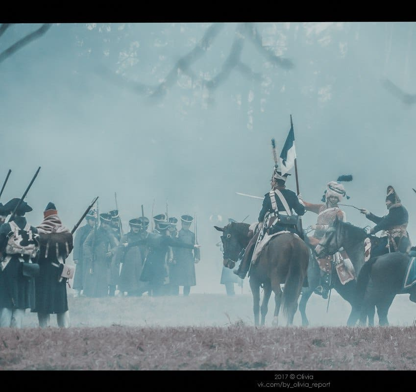

Grenadír podľa @8minsk — Normy Jedál
This is not a shot from the film. 😮This is a reconstruction of the Battle of Berezina.😉 A small detachment of Russian infantry is ready to stand firm, taking the blow of the French infantry and cavalry.
Это не кадр из фильма.😮 Это реконструкция битвы при Березине.😉 Небольшой отряд русской пехоты готов твердо стоять, принимая удар французской пехоты и кавалерии.
#reconstruction #greatarmy #france🇫🇷 #battle #demibrigade #napoleon #nature #cool #napoleonicwars #berezino #winter #livehistory #history #grenadir #lefrance #battle #battlefield #manatarms #photo #historicaluniform #belarus #myhobby #реконструкция #битва #наполеон
#historicaluniform #historybelarus #worldhistory